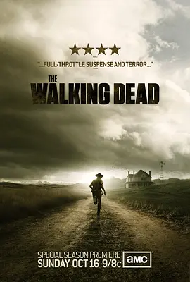

8.4
行尸走肉 第二季
The Walking Dead Season 2
2011
美国
评分 8.4
导演:
格温妮丝·霍德-佩顿 / 厄内斯特·R·迪克森 / 菲尔·亚伯拉罕 / 盖·费尔兰德 / 米歇尔·麦克拉伦
演员:
安德鲁·林肯 / 乔·博恩瑟 / 莎拉·韦恩·卡丽丝 / 劳瑞·侯登 / 杰弗里·德曼
类型:
剧情,恐怖,惊悚
剧情简介
瑞克·格里姆斯在挣扎中带领幸存者逃离亚特兰大的废墟，他们踏上通往未知的旅程，却在高速公路边被一大群行尸堵截。疲惫、惊恐与未知交织，团队在一处农场暂歇，却也由此进入另一场考验。农场的宁静外表掩藏着微妙的人际裂隙：瑞克与挚友申恩的理念不断碰撞，他对洛丽的旧情愫让气氛渐趋紧张。农场的绿地、旧穀仓、秋日黄昏中过度安静的树林，成为了幸存者情绪的投影——白天是食物供应、围栏防守、夜晚则是篝火旁的沉默和恐惧的低语。瑞克看着孩子卡尔从稚嫩转为警惕，怀疑融入了成熟；而申恩则在暗处走向边缘，他的焦躁、怀疑、野性逐渐显露。而真正的威胁不仅来自行尸：内部信任的动摇、领导权的争夺、人与人之间的裂变，让这群人在死亡阴影下彷佛活在一个更无情的战场。农场里的每一次捕猎、每一次夜间探查，都映射出人在极限状态下的脆弱和坚强。第二季不是一场简单的逃亡，它是情感与信念的碰撞，是人类在末日中仍想要保存“人性”的挣扎。